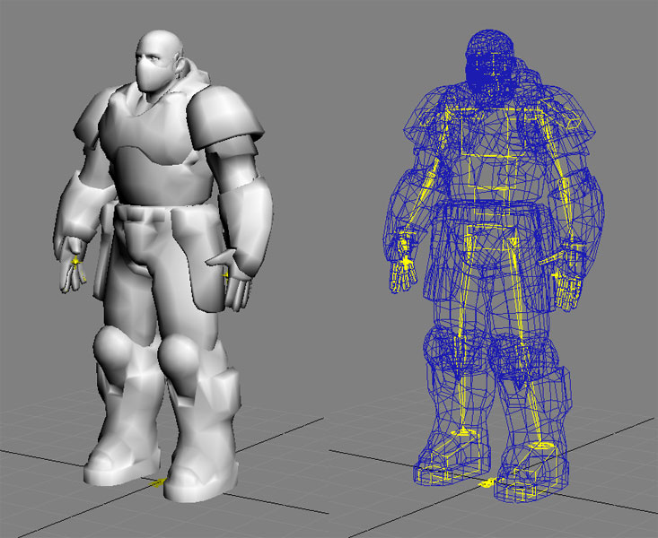
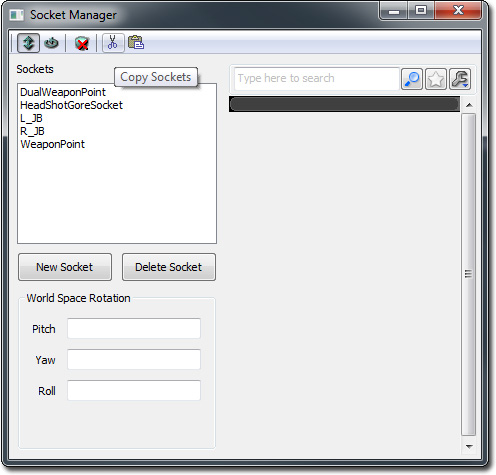
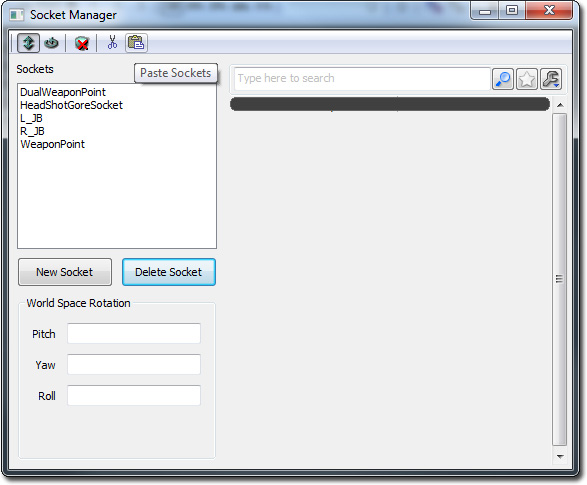

UDN
Search public documentation:
UDKCustomCharacters
日本語訳
中国翻译
한국어
Interested in the Unreal Engine?
Visit the Unreal Technology site.
Looking for jobs and company info?
Check out the Epic games site.
Questions about support via UDN?
Contact the UDN Staff
中国翻译
한국어
Interested in the Unreal Engine?
Visit the Unreal Technology site.
Looking for jobs and company info?
Check out the Epic games site.
Questions about support via UDN?
Contact the UDN Staff
UE3 Home > Gameplay Elements > Creating Custom Characters for UDK
UE3 Home > Character Artist > Creating Custom Characters for UDK
UE3 Home > Character Artist > Creating Custom Characters for UDK
Creating Custom Characters for UDK
Overview
Skeletons
- UT3_Male.max (3D Studio Max 9)
- UT3_Female.max (3D Studio Max 9)
- UT3_Krall.max (3D Studio Max 9)
- UT3_Corrupt.max (3D Studio Max 2009)
Weighting a Mesh to a Skeleton
When creating a custom mesh, it is best to create the mesh with the skeleton in mind. The mesh should be modeled with all the joints matching the location already defined by the skeleton. For meshes that don’t follow this rule, the skeleton joints can be rotated to get them to line up to joints in a mesh. The animations in game will orient the bones back to where they need to be to play correctly. Although bones can be rotated, they should never be translated or moved to try and place them where joints are in a mesh. This will give unexpected results in game and squash or stretch a mesh because the animations define where the bones translation will be. For example, if a mesh has shorter legs than defined by the skeleton, and the skeleton’s leg bones are moved to compensate, the legs will be stretched longer in game to match the length of the other character’s legs. This keeps all pieces connected correctly during the in-game character setup. The correct way to fit meshes to the skeleton is to rotate the joints as needed to get them as close as possible if needed and/or modify the mesh to fit. Creating characters with different proportions will require a new master skeleton, and if the proportions are very different than characters that already exist, they may require their own animations as well which is beyond the scope of this document. Take the mesh below as an example. It has been modeled with the male skeleton in mind. All the major joints and body parts line up well with the skeleton so that no major adjustments are necessary. This makes it extremely simple when it comes time to weight the mesh to the skeleton. Merge in the bones from the UT3_Male.max file, delete the bones that aren’t needed, and then weight the mesh to the skeleton. In this case, the mesh has no extra parts or ‘flappy bits’ that would require extra bones so only the bare essentials are left on the skeleton for the weighting. Exporting
Importing
[YourUDKInstallationDirectory]\UDKGame\Content\Characters
Adding Sockets to the Mesh
| Socket Name | Bone Name |
| WeaponPoint | b_RightWeapon |
| DualWeaponPoint | b_LeftWeapon |
| L_JB | b_LeftAnkle |
| R_JB | b_RightAnkle |
| HeadShotGoreSocket | b_Neck |
Quickly copying sockets from an existing UDK character
If you are using the same skeletal rig in your skeletal mesh as another existing skeletal mesh that is stored in the package, you can quickly copy the sockets over without having to recreate them yourself. For example, open up the Skeletal mesh stored as CH_LIAM_Cathode.Mesh.SK_CH_LIAM_Cathode. Open the Socket Manager, and click on the Copy Sockets button.  Then open up your skeletal mesh. Open up the Socket Manager, and click on the Paste Sockets button and you're done! Setting Up Your Character for Use In-Game
UTFamilyInfo Subclass
TheUTFamilyInfo class is basically a container for properties which allow you to specify which meshes, physics assets, animsets, materials, gibs, etc. to use for a particle character or group of characters. While this class does contain some other functionality, for the purposes of this document it is acceptable to simply see it as a place to set some properties to allow you to put your character into UDK.
In this example, we will be creating a single subclass and using it for just one character. You could, in theory, create a hierarchy of these classes where a class would subclass from UTFamilyInfo and define the general properties for a group of characters that all share something in common. For example, a group of characters might all share a common theme in terms of their appearance. These characters would be considered part of the same faction. You could then create multiple subclasses of this new class. Each of these could be for a specific character within that faction and they could even specify a family they belong to within that faction to further categorize your characters.
Before you go any further, you first need to create a new subclass of this class for your character.
Class UTFamilyInfo_SpaceMarine extends UTFamilyInfo
abstract;
defaultproperties
{
}
CharacterMesh=SkeletalMesh'UDNCharacters.SpaceMarine'
- Faction – The name of the overall group this character or group of characters belongs to.
- FamilyID – The name of the family this character belongs to.
- CharacterTeamBodyMaterials – This is an array of the materials to use as the character’s body material for team games. 0 index is for red, 1 index is for blue.
- CharacterTeamHeadMaterials - This is an array of the materials to use as the character’s head material for team games. 0 index is for red, 1 index is for blue.
- PhysicsAsset – This is a reference to the physics asset created for your character’s skeletal mesh.
- AnimSets – This is an array of the AnimSets to use for your character(s).
- ArmMeshPackageName – The name of the package containing the 1st person arms mesh for this character.
- ArmMesh – This is a reference to the 1st person arms mesh for this character
- ArmSkinPackageName – The name of the package containing the materials for the 1st person arms mesh.
- RedArmMaterial – This is a reference to the red team material for the 1st person arms mesh.
- BlueArmMaterial - This is a reference to the blue team material for the 1st person arms mesh.
[YourUDKInstallationDirectory]/Development/Src/UTGame/Classes
UTPlayerReplicationInfo Class
Now, you need to tell UDK to use this new class instead of the current default class. This can be done in the UTPlayerReplicationInfo.uc file in the default properties block. The last line should currently read:CharClassInfo=class'UTGame.UTFamilyInfo_Liandri_Male'
UTFamilyInfo class. In this example, the line would now be:
CharClassInfo=class'UTGame.UTFamilyInfo_SpaceMarine'